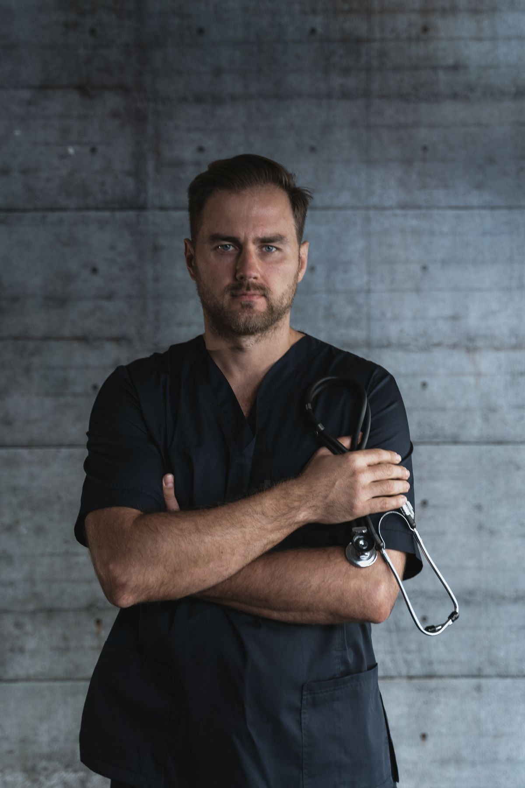
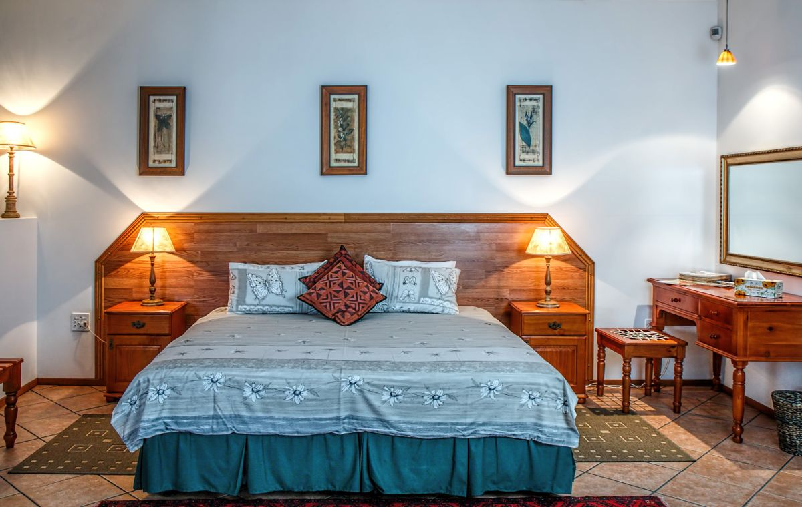

Care That Begins With Understanding.
Sleep concerns can look different from one person to another. Explore the ways SomnaClinic can help you understand your sleep and choose the next step in your care.
Explore Our Specialized Sleep Care Pathways
There is more than one way to understand a sleep problem. Select a pathway below to view our comprehensive diagnostic and therapeutic capabilities.
Sleep Studies & Overnight Diagnostics
Sleep studies can help evaluate sleep patterns, nighttime breathing disturbances, periodic limb movements, and possible sleep-related concerns. Under the guidance of our sleep specialists, diagnostic monitoring gathers objective physiologic telemetry in our private bedroom suites or through qualified home sleep testing kits.
CPAP Therapy & Airflow Management
Continuous positive airway pressure (CPAP) therapy provides gentle, calibrated pneumatic support to maintain upper airway patency during sleep. Our respiratory care team assists with careful mask interface selection, humidity comfort settings, and pressure acclimatization to establish sustainable nightly therapy.
Insomnia Care & Restorative Reconditioning
For people experiencing ongoing difficulty with sleep initiation, frequent night awakenings, or unrefreshing rest, our clinical care addresses conditioned arousal, sleep schedule fragmentation, and circadian misalignment through established behavioral sleep medicine approaches.

Follow-up Care & Treatment Refinement
Sleep patterns and health needs change over time. Our follow-up care emphasizes ongoing conversations, reviewing treatment tolerance, evaluating daytime alertness, and adjusting the care pathway where appropriate to ensure sustained clinical benefit.
A Structured, Unhurried Diagnostic Journey
Sleep care can follow different pathways depending on each person's unique presentation. We progress intentionally through four clear stages.
Notice
Recognize patterns in sleep, nighttime awakenings, snoring, or daytime fatigue. Documenting personal observations helps establish an informed baseline.
Explore
Discuss symptoms, medical history, and sleep routines in a dedicated specialist consultation to determine what diagnostic information may be useful.
Understand
Review objective polysomnography findings and biometric recordings together. Every measurement is explained in plain, transparent language.
Plan
Discuss appropriate next steps, therapy choices, and a structured schedule for follow-up, ensuring continuity and personalized support throughout.
No single diagnostic pathway fits all patients. Care steps are selected collaboratively based on clinical presentation.
“Good Care Should Be Clear.”
Medical evaluations shouldn’t feel opaque, rushed, or intimidating. We believe sleep medicine achieves its highest standard when patients are fully informed partners in every decision.
Listen
Start with the person's lived experience, daytime concerns, and family history. Sleep disorders often manifest subtly, making an unhurried clinical dialogue the cornerstone of effective care.
Explain
Make diagnostic findings, sleep architecture graphs, and treatment options easy to understand. We translate complex physiologic telemetry into practical insights you can act on.
Guide
Help create a clear, realistic path for what comes next. From equipment acclimation to behavioral modifications, our specialists provide steady, collaborative guidance throughout.

Not Sure Where to Begin?
Start with a conversation about your sleep. We can help you understand which next step may be appropriate—whether that involves an in-lab study, home assessment, or behavioral consultation.